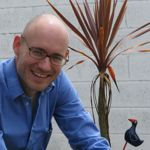

David W. Hogg went to high school in Toronto, Canada, and university at the Massachusetts Institute of Technology in Cambridge, Massachusetts, graduating in 1992. While pursuing his undergraduate degree, he did some research in education and robotics at the MIT Media Laboratory and in Solar System astrophysics at the Canadian Institute for Theoretical Astrophysics.Hogg's PhD research—on gravitational lensing and galaxy evolution—was performed at the California Institute of Technology under the supervision of Roger Blandford, working closely also with Judith Cohen and Gerry Neugebauer. His graduate research made heavy use of the then-new ten-meter W. M. Keck Telescopes. In 1997, Hogg began a long-term membership (postdoc) at the Institute for Advanced Study where, among other things, he became involved in the Sloan Digital Sky Survey.
Hogg came to New York University in 2001, and was granted tenure there in 2007. His work at NYU has ranged from fundamental cosmological measurements to stellar dynamics to exoplanet search and characterization. His work includes a significant engineering component, in areas of instrument calibration, automated data analysis, and statistical inference. He spends a part of each year at the Max Planck Institute for Astronomy in Heidelberg, Germany, where he is a visiting member of the research staff, and a part of each week at the Flatiron Institute of the Simons Foundation, where he is a group leader.
For more information consult his research diary, preprints, refereed publications, or CV.